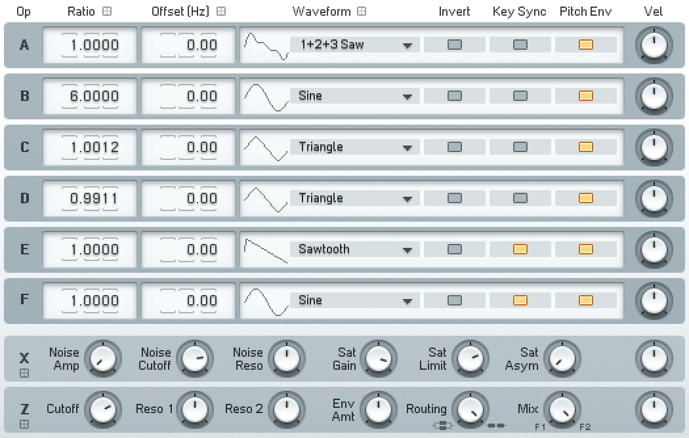
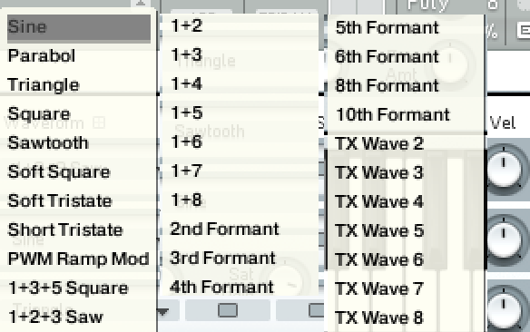
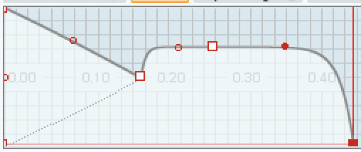
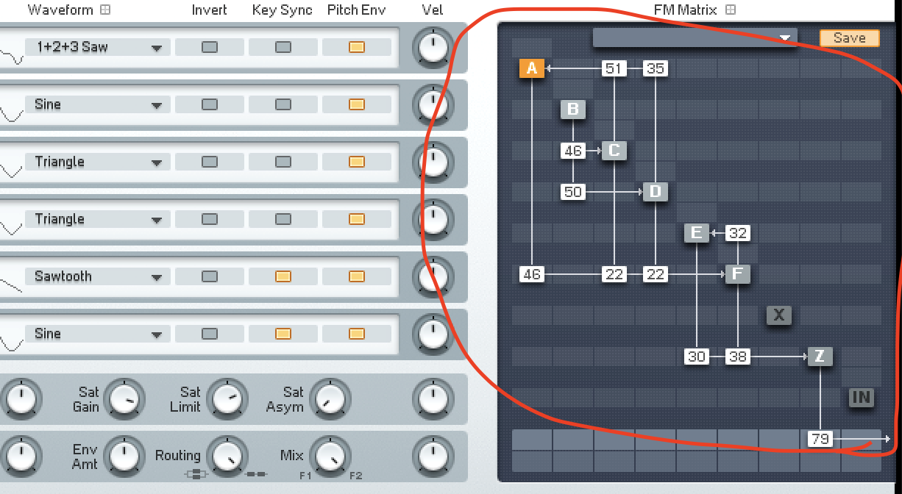
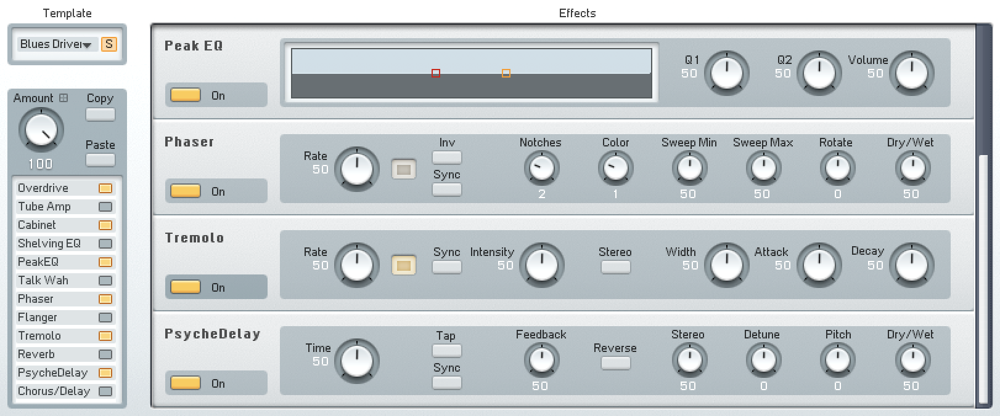

Section 1 - Basics
Learn the basics of FM8's capabilities and who uses it.
Welcome to the Basics section of the FM8 Advanced Tutorial for Ableton Live. In this section, we will lay the foundation for your understanding of FM8's fundamental features and functionalities. By mastering these basics, you'll be well-equipped to explore the more advanced synthesis techniques covered later in the tutorial.
We will begin by introducing you to the operators, which are the building blocks of FM8's synthesis engine. You'll learn how to manipulate and shape the sound using the powerful envelope generators, and discover how to create intricate patches through FM8's flexible routing system.
Next, we will delve into the effects section, where you can add depth, character, and polish to your sounds. We'll also explore the pitch controls, which allow you to fine-tune your patches and create expressive variations.
The master section is an essential component of FM8, and we will guide you through its features, including how to control the overall volume, stereo width, and other global parameters. We'll also introduce you to the morph section, which enables you to seamlessly transition between different sound variations.
Understanding the modulation matrix is key to unlocking FM8's full potential, and we will provide you with a clear explanation of how to use it to create dynamic and evolving sounds. Finally, we'll discuss key scaling, which allows you to map different parameters to the keyboard, creating expressive and playable patches.
However, this tutorial isn't just about FM8. This is covering additive and FM - frequency modulation synthesis as well.
1.1 - The Operators

An operator refers to the part of the FM8 synthesizer that generates sound. These are parts of the synthesizer that you will be manipulating to generate unique sounds. The operators allow you to control pitch or frequency, the output waveform, whether the waveform is inverted, its position when the MIDI event triggers, its amplitude and how it connects to other controls such as pitch bend, modulation control, etc.
An operator also refers to the place in which sound comes in to be manipulated before being sent out again, such as the
Many synthesizers offer a wide range of waveforms to use, however the waveforms provided in FM8 are relatively limted. But, as you continue using it, the limits of the waveforms don't stop you from doing what you need to do, and you have other ways of bringing in your own waveforms as well.
In FM8 these are the waveforms you have to work with:

Here we have a few groups of waveforms we can break down, and the basic sawtooth, square, triangle and sinewave waveforms. You should already be familiar with these waveforms, but they have other properties that are important to know about for FM synthesis.
Within the operators, you can control the frequency ratio, where 1 refers to the base frequency of the note being pressed, and 2 refers to 2 times the frequency, which would refer to one octave. The fine controls up to 1.0000 give you more control over the exact pitch.
Offset refers to the exact pitch, in hertz, that the waveform will be offset by.
1.2 - The Envelopes

The envelopes in FM8 are quite complex, providing for a lot of customization when right clicking on the line. Here, you can control the height at T, and the bezier function that determines its curvature. Though it doesn't have a specific knob that controls the exact duration at each breakpoint of Attack, Decay, Sustain and Release, it allows you to control the exact position and snaps to the meter in "Tempo Sync" mode.
Envelope presets can be stored and retrieved by overwriting their values in the panel, which could save you some time if you're trying to make a lot of the same envelope across all operators.
1.3 - Routing

This will be covered later in depth, but the routing allows you to control which operator that the output of any operator will be going into. Here, an operator can be passed into itself, with a small delay. The operators can also be fed back into each other after being passed through operators, allowing for very complex sounds.
When you click and drag up and down on each part of the grid, you are controlling the amplitude of the operator being passed through.
The values are integer values from 0-100, so there is no fine control, which can be a bit of an issue if you want to control the operators exactly from outside the synthesizer in your DAW. If you want more fine control, it's suggested that you use an envelope for exact control.
1.4 Effects

Effects in FM8 are a rack of optional effects you can add after the sound has been generated. These include reverb and delay, distortion, an amp and cabinets, as well as chorus and EQs. However, despite the options for customizing their values, they cannot be change in their order, unlike similar synthesizers. Note: they aren't very powerful, and most things should be done outside of the synth for the best results.
Overdrive
Add distortion to your sound like a guitar amp to get heavy metal sounds. This has controls drive, tone and bass.
Tube Amp
With this amplifier, you can add extra tone like an analog amplifier. It has a control for volume and drive.
Cabinet
Allows you to mimic a recording from a live performance, with 2x12s, 4x10s and 4x12 with on-axis, far, back and horn options.
Shelving & Peak EQ
These provide basic controls over the EQ, but are very limited in their function. However, for most use cases, they should provide enough function to control the lows, mids and highs.
Talk Wah
Talk Wah is a common filter that provides control over which vowel sound is being formed by the sound, mimicking a mouth. The effect allows control of the size, which can make it sound smaller or larger, and it has a mouth dial that lets you control the vowel being produced.
Phaser
The FM8 phaser allows you to make other vocalish sounds, with an alien tone, but it doesn't provide much room for customization. It allows you to control the number of notches and the color, the speed that the phaser "phases". It does not allow you to choose the resonance/feedback of the phases, nor its exact position, like Ableton Live's phaser.
Flanger
Flanger provides a unison-like effect, by subtracting a detuned sound from the input. This results in beating which will be explained later in this manual.
Tremelo
This tremelo uses an LFO to make a wobbling sound, and allows you to control whether is synchronized to the beat, its intensity. The width allows you to determine the width of the peak of the LFO. The attack and decay control the shape of the LFO.
Reverb
FM8's reverb provides a basic and tinny reverb for adding to your sounds. You're better off using literally any other reverb.
PsycheDelay
PhycheDelay lets you add effects on top of your delay, like detuning with granular synthesis and even reversing the sound.
Chorus/Delay
FM8's chorus is a delay. Well, technically, all chorus effects are delay. This delay allows you to provide millisecond or synchronized control on the delay.